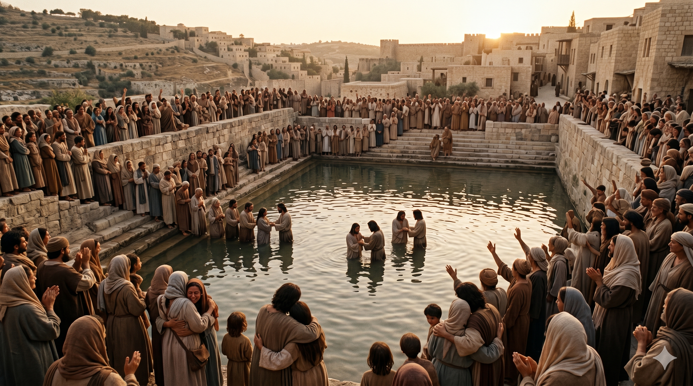

오순절 성령 강림 후 베드로가 군중 앞에 서서 담대히 복음을 선포하는 장면 — 예루살렘 광장
베드로가 열한 사도와 함께 서서 소리를 높여 이르되 유대인들과 예루살렘에 사는 모든 사람들아 이 일을 너희로 알게 할 것이니 내 말에 귀를 기울이라 … 이스라엘 온 집은 확실히 알지니 너희가 십자가에 못 박은 이 예수를 하나님이 주와 그리스도가 되게 하셨느니라 하니라 그들이 이 말을 듣고 마음에 찔려 베드로와 다른 사도들에게 물어 이르되 형제들아 우리가 어찌할꼬 하거늘 — 사도행전 2:14, 36–37
오순절은 유월절로부터 50일째 되는 날로, 유대인들에게는 첫 수확을 감사하는 칠칠절이기도 했습니다. 이날 예루살렘에는 디아스포라 유대인들을 포함해 각처에서 몰려온 수만 명의 군중이 가득했습니다. 성령이 바람과 불의 혀 같은 모습으로 임하며 제자들이 방언을 말하자, 군중은 당황하며 "이들이 새 술에 취한 것이 아니냐"며 조롱했습니다. 그 순간, 베드로가 열한 사도와 함께 일어섭니다. 불과 몇 주 전 새벽 닭 울음 소리에 통곡하던 그 사람이, 이제 수천 명 앞에 서서 목소리를 높입니다.
베드로의 설교는 요엘의 예언(욜 2:28–32)으로 시작해, 다윗의 시편(시 16:8–11; 110:1)을 인용하며 예수의 부활과 승천이 성경의 성취임을 논증합니다. 그리고 정점에서 선언합니다. "너희가 십자가에 못 박은 이 예수를 하나님이 주와 그리스도가 되게 하셨다." 이 한 마디가 군중의 마음을 찌릅니다. 그날 세례를 받은 사람이 삼천 명이었습니다(행 2:41). 이것이 교회의 탄생이었고, 겁쟁이 어부 베드로가 복음의 첫 목소리가 되는 순간이었습니다.

설교를 듣고 마음에 찔려 "우리가 어찌할꼬" 외치는 군중과, 세례를 받기 위해 나아오는 삼천 명의 무리
베드로의 변화는 기적입니다. 닭 울기 전에 세 번 예수를 부인했던 그가, 이제 바로 그 예루살렘 한복판에서 "너희가 못 박은 예수가 주와 그리스도"라고 외칩니다. 이것은 인간의 용기가 아니라 성령의 능력입니다. 우리 역시 우리의 힘으로는 담대함을 만들어낼 수 없습니다. 그러나 성령이 임하시면, 우리가 가장 두려워하던 그 자리에서 가장 담대한 증인이 될 수 있습니다. 오늘 당신이 침묵하고 있는 곳이 어디입니까? 성령께 그 자리를 내어드리십시오.
베드로는 설교를 마치고 군중이 "우리가 어찌할꼬" 물을 때, 답을 준비하고 있었습니다. "회개하여 각각 예수 그리스도의 이름으로 세례를 받고 죄 사함을 받으라. 그리하면 성령의 선물을 받으리니"(행 2:38). 복음의 핵심은 지금도 변함이 없습니다. 회개, 믿음, 세례, 성령. 우리가 누군가에게 복음을 전할 때, 이 단순하고 명확한 초청을 잊지 마십시오. 화려한 말이 아니라, 명확한 초청이 삼천 명의 문을 열었습니다.
다락방의 베드로가 광장으로 나왔습니다.
두려움은 성령 앞에서 담대함이 되었고,
한 사람의 목소리가 삼천 명의 문을 두드렸습니다.
오늘, 당신의 다락방 문을 열 때가 되었습니다.